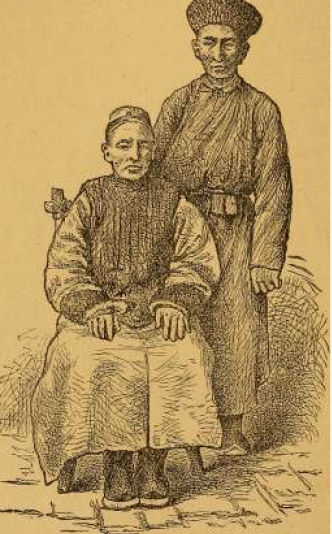

第９章 モンゴル人の食事
招待ー主人自ら調理に当たるー会話はずまずー気のあった仲間来るー料理の出来上がりー上席ー正式の作法ー二番目コースー早寝ー臀肉はなぜご馳走かーモンゴル人にしっぺ返しー生きた食べ物
ある午後そろそろ夕方に近づいて、教師のゲルに座っていると、一人の馬飼いが戸口に現れて、大官が私と食事を共にしたいと口上を述べた。行くかと問うので、「ただ今」と答えて、私は立ち上がって使者と同道した。私は主人の前に招ぜられたが、食事は半公式的なもので、二番ゲルで行われることを知った。大官は小さな酒盃で支那ウイスキーを傾けつつ、自ら食事の用意をしていた。酒は円錐形の酒器にいれて火間に立て或いは沸騰した鍋の中において暖める。どれほど長く彼が仕事にかかっていたか、或いはこうしてどれほど多くウイスキーを飲み干したかは疑問であるが、飲む方に夢中らしく、あまり口数をきこうともしなかった。
何か話しかけるときは、もう前に回答をすました公式的な質問をするばかりで、私が話しかけようとすると、ほとんど無意味に私の方を眺めるに過ぎない。返答をしても、何か一言言うだけであった。話をすると、言い終わるまでじっと私の方を見、その間、口の中に含んでいたウイスキーをごくりと飲み下して、承諾のつもりか呂律のまわらぬ文句を言っては、またウイスキーを澗したり満たしたりするのに忙しくした。
かようになかなか意思が通じないのであるから、この上会話を続けても何にもならぬ。それで私も主人をまねて沈黙を守ったが、そのとき里帰りしていた結婚した娘ー快活な肥った顔の平たい主婦が手助けに来て、私の懐中時計を見せたり、外国の結婚習俗を私にたずねたりして父親の興味を惹こうとした。しかしそれも何にもならぬ。主人はあたかも支那ウイスキー以外に興味を抱く余裕がないかの如くであった。
私を招待しておいて、少しも話をしようとしないのに幾分驚いた。そして我々は、隣の片目の貧乏な男が入ってきて、ゲルの一番末席の炉と戸口の間に座ったので、少し白けかえった。
大官は召使いに命じて、新来の客に酒をかんして盃を渡すように命じた。すると貧しい老人は急におしゃべりになり、大官もそれに引き込まれ、酒好きという点だけで一致を見た二人の男は、長々と愉快気に話し合った。彼らの間に話を取り持つ必要もなく、いつまでも口早に馬のこと、牛のこと、さては付近の種種のことをしゃべっている。家の子どもも隣のゲルの子どもも外に出て賭博を始め、勝負を競いだしたので、私は食事のほとんど出来上がるまで見ていた。時間になると、夕方来あわせたラマが招ぜられて現れた。彼は私に上席をあけて共に座った。この黄衣の人は、丁度貧乏な飲み助が主人の相手をつとめるように、私の相手をした。彼は博学で談話を好み、共に語って我はすっかりくつろいだ。やがて、大官の検分をうけるために料理を持ってきたが、ラマはなかば語りかけた言葉を打ち切り、きっとした顔で吸い込まれるように見つめ、大官の手にしたものに全身の注意を払うのであった。私は彼の意識の外に放りだされた形で、自然会話も立ち消えとなった。
しかし沈黙も長くは続かない、まもなく羊肉のできあがりが報ぜられ、大官の鍵を預かって召使長のように振る舞っているラマが、大きな真ちゅうの皿を二つ持参した。そのひとつには主人のための肉をもり、他は羊肉の大塊、肋骨の後部、大きなひろい脂肪の尻尾、肋骨などの細々した部分が盛ってある。我々は仕事にとりかかったが、ラマは臀部と尻尾を出すのは主人が客にもてなす最大のご馳走であると説明した。
小刀だけを手にして、我々がさんざんにゆで肉をあらしまわっていると、主人は明らかに私が正しい作法を知らないことに気をつけた。ラマはゲルの中にいる者にはすべて分配せねばならぬと語ったが、このために集まった近所の人々や子ども達でゲルのなかはほとんど一杯になっていた。私のねがいに応じて、彼は親切に切り取って分けてくれた。彼の小刀は骨の関節や形を知ること神の如く、間もなくゲルのみんなが食べ始めた。我々が第一段にかかっている間に、羊肉をゆでた鍋の汁に稗粉を投じ、尻尾をたいらげ骨をつまむまでには稗が料理されて、椀を差し出した者に振る舞われた。稗を食しおわるや、布団の話が出て、私は鄭重に今いる場所に寝るように招ぜられた。ラマは数分間前に立ち去っており、私もほのめかされたのをしおに、六時半に寝ようと言う家族を後に辞し去った。
臀肉に尾部をつけて客に出すのは歓待の意味である。けだし羊は唯一の尾を有するにすぎないから、これを料理して供するには羊一頭堵らねばならぬし、また肥ったのでなければ尾部は見られたものでないから、当然よいのを堵らねばならない。外国人にとっては、小刀のほか何の手助けもなく、直径二尺に近い真ちゅう皿の上に横たわる肥大な羊肉塊を攻撃せねばならぬので、愉快に宴を楽しむという気分にはなりがたい。しかし私はモンゴル人の主人を北京において私のテーブルに招待し、外国のナイフやフォークを使わせて、しっぺ返しをすましたと思っている。
文明的な多種多様な食器がモンゴル人を途方に暮れさせるように、テントの宴楽にそれが全くないのも外国人に当惑の種である。おそらく何れの場合にも客の感じは同様なるべく、宴会は食欲をそそるよりも威厳をつくろうのに汲々させる。
婦人の場合には、テントの宴会は成功しない。ある時、北京で我々のテーブルの賓客となったモンゴル人が、妻と私をその家庭に招待せんとした。しかしどうすれば我々の喜ぶような料理を供し得るか判らないので、極めて賢明にこの問題を解いた。彼は生きたままの羊を一頭我々に贈り、料理法を知らぬ事を弁解しながら、どうにも好きなように料理してくれ、と申し出たものである。
(EOF)
第10章 モンゴル役人の裁き
パスポートの必要ー馬の賃借ー途中で止められるー馬の無理預けー地方役人に訴えるー役人の裁きー再び馬で悶着ー頭を打ち割るーテントの中で大喧嘩ー『上着を置いて行く』ー『出発してはならぬ』ー役人の知恵を借りるー公式の言明ー個人的な意見ーモンゴルには私なしー和解ー売り言葉に買い言葉
モンゴル旅行する場合には、見知らぬ旅人の姓名・職業等に疑い深い役人を納得させるため、また悶着の起ったときに地方官憲の斡旋や援助を請うために、パスポートを用意する必要がある。私は疑い深い大官からパスポートを見せよと要求された経験はないが、モンゴル役人の口添えを求めたことは二回ある。第一の場合は次の如くであった。あるモンゴル人が、私が旅行用の馬を借りたがっているの知って、私のテントを訪れ、取引を済まして料金を定め、もし実地に見て私が適当だと思ったら決定することとなった。馬は草原上に放牧してあるので、夕方畜群を連れ戻す際に見せるということであった。
畜群がやって来たので、私は召使いにその馬を検査するように命じたところが、彼は全く使用に適しないと報告した。これを聞いて、私は誰かほかの者の馬を交渉するように召使いに言うと、彼はやがて帰ってきて別に見出したというので、万事うまくいったと思って床についた。
翌朝早く馬を連れてきたので、召使いが乗ってみた。私は彼の騎乗の物音を耳にして、馬背の姿を見んものとゲルから首を出した。霧の深い朝で、彼はもうかなり距っていたが、その時一人の馬上の男がこれを追いかけ、とうとう追いついて、停止させたのを目撃した。その男は何かわめきながら、召使いを従えて私の宿営の方にやってくる。紛争の原因はまもなく氷解した。邪魔をした男は最初交渉した馬の持ち主で、貸したいあまりに、是非彼の馬を使えと主張するのである。彼に対して馬を実地に見聞して適当であったら借りるという条件であって、背部に腫れ物のあるのが発見されたから断って、代わりに他のを借りたのだと説明した。それからくどくどと言い合いが続いて、結局背部に腫れ物のある馬の持ち主は、不機嫌そうに黙って他の馬を選ぶことに同意し、そこで私の召使いも出かけた。
失望した男は、我々のテントに居残っていたが、不愉快そうなのを見て、私は親切に話しかけた。すると彼は最初大いに喜ぶように見えたが、やがてがらりと調子を変えて、
『お前さんはわしの馬を借りた。わしは馬を連れてきて、そこにいる。乗ろうと乗るまいと、お前さんは賃貸を払わねばならん。わしはお前さんの所に馬をつないで行く』
と言う。そして早速言葉通りに、彼は私の荷車の車輪に馬を繋いで、立ち去った。
朝は過ぎ去ったが、馬はあいからず残っている。どうしたら良いだろう。
『放っておきなさい。繋いだままにしておきなさい。構ったことじゃありませんよ』
とモンゴル人の召使いは言う。しかし、私としては、単に持ち主が私と口論したからというだけで、馬に飼葉も水もやらず に放っておくことはできなかった。しかし、他方ほどいてやるとか、馬が何かの拍子で断ち切って逃げ出したとすれば、私は当然責任を負って、なくなれば賠償せねばならない。私はその持ち主のような男とこれ以上係わり合いになることを欲しなかった。黙って言い分を聞いて賃貸を払うとなると、それこそ愚の骨頂で、今後適当な価格で羊を買ったり、人間や牛や馬を借りたりするのが極めて困難になるであろう。
私として一番良い方法は、一マイルばかり彼方に住居の見えている地方役人の知恵を求めることであった。彼はある富裕な家族の息子の一人で、家長は高位にあり、当時要職に就いていた。

（役人）
彼の『アイル（モンゴルでは二あるいは三家族に属するテントの群れをこのように称する）』に着くと、犬は地面に差し込んだ柱に繋ないであり、やがて見事な敷物を敷き詰めた小型の清潔なゲルに案内されたが、ほとんど何一つ家具はなかった。このゲルは明らかに商取引を行う彼の事務所で、お茶が出され、役人の来るまで待つようにと言われた。
来がけに見かけた場所に行くと、馬の大群の中に数人の男がおり、そのうちに私が裁きを求めにきた例の馬の持ち主もいた。役人が現れると、私は馬群中の人々の間に彼を認めたので、まず普通に挨拶を終わってから、悶着の生じた結末を手短に述べて私の苦衷を語り、そうした場合どうすればよいか尋ねに来たと言った。彼は若い男で、静かに私の言葉を傾聴していたが、やがて口を切るまもなく、一心に数珠玉を数えていた彼の叔父らしい老ラマが、折柄ゲルの戸口の辺に集まった人々に混ざっている馬の持ち主に、突然激しい調子で怒鳴りつけた。
『背に腫れ物のある馬に鞍を置いて乗るとは、貴様はなんという罪深い根性なんじゃ。ーーー貴様は人間か、それとも犬か。』
役人も一緒に罵り、かわいそうにこの男は痛く叱責されたので、私がとりなした程であった。持ち主がいまだ私のゲルから連れ去ることを約そうとしない馬について、どうしたら良いかと尋ねる、と役人は
『放ってしまいなさい。後の責任は皆私が負いますから』
と言うのであった。しばらくいろいろの談笑を交してから、役人は馬の持ち主が貧乏であって、おそらく自分の馬の稼ぐと思った賃貸がもらえずに失望したに相違ないから、彼をなだめるために少しばかり心付けやったら良かろうと言った。私は彼に適当と思える金額を示してもらいたいと頼んだが、彼はその男が何の要求もなし得ざるのみか、態度が悪いのだから、いくらでも与えれば分に過ぎるのだと言って示そうとしなかった。私の仕事も済んだから、革装の手帳を役人に贈り、『アイル』の少し先まで見送りを受けてゲルに戻った。そして悶着の原因となった男に少しばかり心付けをやり、馬を引いて立ち去るのを見た。
私が次にモンゴルの役人に裁断を請うたのはこれよりも数年後で、やはり馬の賃貸に関係したことであった。モンゴル人下僕二名の家のある小部落に宿営していたとき、私は馬二頭を借りようとしたが、どうしたわけか土民が共謀して価格を釣り上げた。私は憤懣やるかたなく、召使いをテントに呼び入れて、ほかの土地でいかに虐待されるにせよ、お前たちの土地では公正な行為を期待していたと言った。これは訪問者がことごとく立ち去った後の夕方のことであった。
翌朝身繕いを済ましたところに、私は五、六人の人たちが私のテントに近づいてくるのを認めた。このとき既に先客があり、一老人が幼児を抱いて座っていたので、私はこうした幸先の良い日を迎えたことを喜び、キリスト教のことなどをゆっくりと話し合いたいと望んだ。ちょうど座についた折も折、数人の男が入ってきて、そのうちの一人がどっかと座るより早く、前からテントにいた老人に話しかけたかと思うと、ほとんど同時にツルツルにそり上げた頭（彼はラマであった）を殴りつけた。一撃を加えた杖が折れて、老人の頭は見る見る腫れ上がり鶏の卵大のコブができたくらいであった。
ほんの数分間の出来事で、何人を押し留める暇もなかった。声高に怒鳴り声を発してののしり合ううちに、いきなり老ラマは加害者ーーーやはりラマだが年若いーーーの顔を激しくピシャリと平手で打った。彼は互いに咽喉に跳び掛かり、相手の襟首を掴んで、手荒に押したり引いたりした。傍観者たちは両人の上にのしかかり、これを引き離そうとする。興奮してガヤガヤ呼ぶ人々の群れが、狭いテントの中であっちでもこっちでも、揉み合ったり争ったりした。ついには乱暴によろめいて柱さえ押し倒すようになり、私の住居もめちゃくちゃになるかと思われた。
部落のほかの人たちは物音や叫び声を聞きつけて、我々が二人の激怒して血を流しているラマを引き分けたときには、土地の少しばかりの住民は総出で集まり、部落の女たちはいずれも声高に早口でもってしゃべり廻り、なかには数人が一度にさえずるという始末である。最初の一撃の他には大した損傷もなく、ちょっとした爪痕の傷から血が出ているくらいであった。若いラマは私の召使いのゲルに連れて行き、女たちには話をやめて家に帰るように言い勧め、老ラマは再び子供を膝の上に乗せーーー喧嘩が起こったときこの子をどこにやったのか私には判らなかったーーー私のテントに座り、殴り合いの際大衣から引きちぎられた支那製の球状真鍮ボタンを口に含みながら、子供を抱いて静かにテントの中に座っていたら、突然予告もなく暴力を加えられということを、説明するのであった。
しばらくして彼は立ち去ったが、数分後部落のゲルの間から叫喚が聞こえた。おそらくゲルに帰り着くや、年取ったほうの妻（彼は老齢で貧しく、わずかにひとつのテントを有するに過ぎぬにもかかわらず結婚して、現に二人の妻を有していた）が、彼の腫れた頭、傷のついた顔、乱れた着物に真実驚愕して、もしくは仰天した風を装い、カンカンになって危害を加えた若いラマのもとに赴き、彼女の良人が不具になったと言い、もし一年以内にもしものことがあったら若いラマは彼の生命に対して責任があると警告した。
老ラマは細君の扇動で再び私のテントに現れ、自分は貧乏で負傷したと言い、『上着を私のところに置いて行く』と述べた。言うが早いか、彼は上着を脱いで、私の箱の上に置き、立ち去った。まもなく彼は私に使いをよこして、私の下僕の一人は若いラマの兄弟で近所に置いておくことはできぬから、私は一人新しい召使いを求めねばならぬと伝言した。さらに後になって、今度はこの喧嘩の収まりがつくまで、私自身立ち去ってはならぬと警告してきた。危害は私のテントの中で加えられたのであり、私は現場に居合わせた重要な証人なのだ。
さて、老ラマによればこの場所を離れてはならぬ当の召使いとともに騎馬の旅行を始めようとしていた際に、大見栄を切って私のテントに預けて行った上着は二十四時間というものはそのまま放ってあるので、私は一体これはどういう意味か好奇心を持ち始め、自由に旅行できぬ通知の真相を知ろうと欲した。それで私は役人の住居を訪れたのである。幸い彼は私の宿営していた傍の部落に住んでいて、危害の加えられた際も現に私のテントに居合わせ、出来事を全てよく知っていた。上着については、彼は召使いの手を通じて返却し、これを置いて行った訳を尋ねなさいと勧め、そうすれば老ラマは意のあるところを明らかにするに違いないと述べた。旅行については、旗衛門の命令で禁じられるまでは、私も召使いも自由にどこへでも行けるということであった。またこの事件を上司に報じてから一日半経過したが、何の返事もないから、私も召使いも召喚にわずらわされることはあるまいと付け加えた。
こうした公式の意見を述べてから、今度は四角ばらぬ友誼的な口調で、事件の一部始終について個人の意見を述べ始めた。それはこうである。老ラマは貪欲で、私の下僕が廉く馬を賃貸しようとしているのを罵倒した。下僕の兄弟のラマがこれを聞き付け、私のテントに詰問に来て、逆上のあまり老ラマの頭をぶち割った。老ラマは若い方の馬に乗って、後者の馬の放牧してある草地に赴き、連れ去って第三者の手に安全に保管しようとしたのである。モンゴル人は大体こんなに殴られることがないので、老ラマは何でもないのに騒ぎ立てているのだ、彼は殴られた日は大方馬を乗り回していたから、大して危害を蒙らなかったことは明らかだーーと役人は言った。モンゴルにおいてはすべてのテント、役人のテントでさえ一般に開放されているらしく、言われたことはまもなく皆に知れ渡る。老ラマも確かにこれを聞きつけた。彼は上着を取り、役人が私の出発を許すなら旅行は自由だが、下僕はどんなことがあっても土地を離れてはならぬと言い張った。けれども、出発の時間が来るや、われわれは馬にまたがり、追跡してくれば容易に追いつけるように徐行したが、何人もわれわれの行進を阻む者はなかった。やがて帰ってみると、出発前和解の道のなかったものが、留守中にまとまって、二人のラマはまたもや仲の良い友達になっているの知って喜んだ。若いラマは老ラマの頭を打ち割り、老ラマは若い方の馬をつかまえて乗り回した。二つの非行から一つの正義の出来上がることはないが、若い方で弁解すると、老人も喜んで怒鳴ることを止め、平和は再び小部落に訪れたのである長たらしい訴訟に当惑したり費用をかけることは、こうして免れた。
私がモンゴル人の裁きを求めた経験はこうしたものである。私はできるだけ明瞭に語ったが、彼らは大部分干渉を欲しないことを知った。彼らはできる限り中に入ることを避け、ミッションに対するその態度は日本官憲のそれに極めて似ている。日本官憲は宣教師に随意に国内伝道に赴くよう、ただ『貴君とその仕事を官憲に注目されぬようにしてもらいたい』と個人的に忠告すると伝えられる。
（EOF)